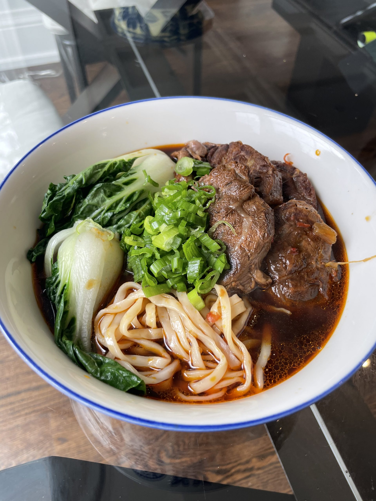

Beef Noodles

Description
Beef noodles is a noodle soup made of stewed or red braised beef, beef broth, vegetables and noodles.
My favourite beef noodles however are made in Penang. Theres beef stomach included in Penang's version of beef noodles and uses koay teow for its noodles.
Ingredients
- Raw beef slices
- Raw beef stomach
- Beef broth
- Vegetables
- Koay teow noodles
- Chilli flakes
- Ground white pepper
- Garlic powder
- Onion powder
- Chicken stock
Steps
- Combine soup ingredients in a pot and simmer on low heat until the soup obtains flavor.
- Adjust seasoning to personal taste. I like my soup with lots of white pepper for its pepperish aromatic flavor.
- Add more water as needed.
- When the soup and the meat is done, start cooking the noodles in a separate pot.
- Once the noodles are done, take a bowl and fill it with the soup and beef from earlier and add your noodles to the bowl.
- Add some chilli flakes to the bowl (optional). The spiciness of the chilli flakes add a lot to the beef noodles' flavor.
- Add additional herbs or fried shallots to personal preference (optional).